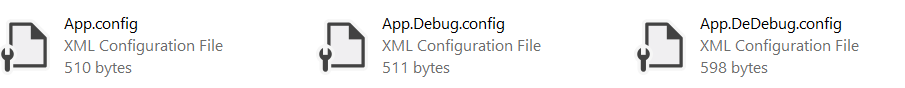

msbuid(5)-不同环境配置管理
vs解决方案下，不同的环境，使用不同的配置文件。
安装Microsoft Web Developer Tools
非web应用程序想要使用TransformXmlTask的话需要安装web发布工具组件。
配置项目工程文件
在ItemGroup节点下，新增如下节点
<ItemGroup>
<None Include="App.config">
<SubType>Designer</SubType>
</None>
<None Include="App.Debug.config">
<DependentUpon>App.config</DependentUpon>
</None>
<None Include="App.DeDebug.config">
<DependentUpon>App.config</DependentUpon>
</None>
</ItemGroup>
在项目的根目录下，创建不同环境下对应的.config文件

添加TransformXml任务
在项目工程文件下，添加AfterBuild的Target对App.config文件进行处理
<UsingTask TaskName="TransformXml"
AssemblyFile="$(MSBuildExtensionsPath)\Microsoft\VisualStudio\v15.0\Web\Microsoft.Web.Publishing.Tasks.dll" />
<Target Name="AfterBuild">
<TransformXml Source="App.config" Transform="App.$(Configuration).config" Destination="$(OutputPath)\$(AssemblyName).exe.config" />
</Target>
- 使用
UsingTask引入TransformXml任务的dll文件 - 配置
TransformXml
应用TransformXml任务
- 在App.DeDebug.config文件中，修改configuration节点，添加
TransformXml的名称空间
<configuration xmlns:xdt="http://schemas.microsoft.com/XML-Document-Transform">
- 使用
xdt:Transform="Replace"替换想要更改的配置
<connectionStrings>
<add name="testdb" connectionString="XO/a/G9SUz5hlFz9f7aSknZatm/ouBJf6d/cOhv5pB4neoEWSrGyj60LSeAey1UuepYm5ItZ5FlmzBRfNfQfxA==" xdt:Transform="Replace"/>
</connectionStrings>